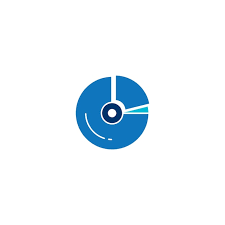

Головний заголовок (H1)
Підзаголовок рівень 2 (H2)
Підзаголовок рівень 3 (H3)
Підзаголовок рівень 4 (H4)
Підзаголовок рівень 5 (H5)
Підзаголовок рівень 6 (H6)
Це жирний текст та курсив.
Можна також використовувати підкреслений та виділений текст.
А ще є маленький текст та закреслений.
